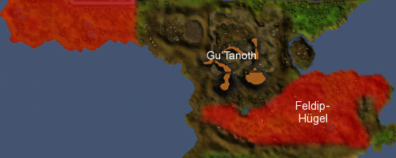
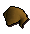
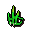

")
Schmatzie- und Batzi-Jagd
Einführung | Voraussetzungen | Empfohlene Ausrüstung | Jagd auf Schmatzie- und Batzivögel | Belohnungen
Einführung

Schmatzie- und Batzivögel könnt ihr in ein paar Gebieten im Land der Oger jagen, insbesondere westlich des Poggog und in den Feldip-Hügeln.
Es ist wissenswert, dass die Schmatzie-Jagdgebiete sehr nah an der Burgenkampf-Arena liegen und ihr somit einen Duell-Ring benutzen könnt, um sie schnell zu erreichen.
Voraussetzungen
Um normale Schmatzievögel zu jagen, müsst ihr das Abenteuer 'Die große Schmatzie-Jagd' abgeschlossen haben und deshalb natürlich auch die gleichen Voraussetzungen erfüllen.

Um Jagd auf Batzivögel zu machen, müsst ihr angefangen haben, Skrach Uglogwee aus dem Abenteuer 'Ein ausgekochtes Rezept' zu retten - und demnach auch die Voraussetzungen hierfür erfüllen.
Empfohlene Ausrüstung
Für die Jagd auf Schmatzies benötigt ihr einen Oger-Bogen und einige Oger-Pfeile sowie aufgeblasene Kröten als Köder. Wenn ihr nach einigen Abenteuern wieder anfangt, Schmatzies zu jagen, und euren Oger-Bogen verloren habt, könnt ihr von Rantz einen neuen kaufen. Ihr solltet hierfür 600 Goldmünzen mitnehmen, da Rantz sich häufig nicht so recht an den Preis erinnern kann, der deshalb stark schwankt. Wenn ihr den Oger-Blasebalg zum Aufblasen von Kröten verloren habt, könnt ihr in Rantz' Höhle einen neuen finden.
Batzivögel sind etwas wählerischer, weshalb ihr als Köder Ballon-Kröten braucht. Ballon-Kröten sind zu stark aufgeblasene Kröten, für deren Herstellung ihr ein Wollknäuel, einen Stein und eine aufgeblasene Kröte benötigt. Wenn ihr alle nötigen Gegenstände in eurem Inventar habt, blast die aufgeblasene Kröte einfach noch einmal auf.
Obwohl ihr nur drei aufgeblasene Kröten oder Ballon-Kröten gleichzeitig in eurem Inventar herumtragen könnt, könnt ihr natürlich die nötigen Gegenstände für mehrere bei euch haben. Wenn ihr also größere Mengen Schmatzie- oder Batzivögel anlocken wollt, solltet ihr in der Nähe eines Teiches jagen, wo ihr immer mehr Kröten finden könnt, die ihr zu aufgeblasenen oder Ballon-Kröten verarbeiten könnt.
Aufgeblasene Kröten wie auch Ballon-Kröten explodieren nach einiger Zeit und können hierbei Schaden anrichten. Dementsprechend ist es eine gute Idee, etwas Abstand von eurem Köder zu halten, während ihr auf die Vögel wartet.
Eine Anleitung zum Herstellen von Oger-Pfeilen findet ihr im Artikel Bognerei - Pfeile herstellen hier im Kompendium. Während des Abenteuers 'Die Zoger-Fleischfresser' bekommt ihr Zugang zu Oger-Kompositbögen und Brutalpfeilen. Der Kompositbogen kann viel schneller wieder abgefeuert werden, und Brutalpfeile gibt es in allen Varianten von Bronze- bis zu Runitspitzen, wodurch ihr viel mehr Schaden anrichten könnt. Wenn ihr eine größere Menge an Schmatzies oder Batzis erlegen wollt, ist diese Kombination eine gute Idee. Wie man Oger-Kompositbögen herstellt, findet ihr im Artikel Bognerei - Bögen herstellen heraus, die Herstellung von Brutalpfeilen wird unter Bognerei - Pfeile herstellen erklärt.
 Wenn ihr die Schmatzie- und Batzivögel selbst essen wollt, müsst ihr die richtige Ausrüstung für ihre Zubereitung haben. Schmatzies könnt ihr entweder auf den Oger-Drehrosten bei Rantz' Höhle und beim Poggog braten oder mit einem tragbaren Bratspieß über einem offenen Feuer zubereiten. Batzivögel dagegen können nur mit den Oger-Drehrosten beim Poggog und Rantz' Höhle zubereitet werden. Es ist nicht möglich, Schmatzies oder Batzis auf andere Arten zuzubereiten.
Jagd auf Schmatzie- und Batzivögel

Gelegentlich werdet ihr mit euren Kröten keine Schmatzie- oder Batzivögel beeindrucken können und sie werden nicht landen. In diesem Fall solltet ihr es einfach an einer anderen Stelle noch einmal probieren - auf diese Art solltet ihr schließlich eure Beute erlegen können.
Belohnungen
Rantz scheint sehr viel von Mützen zu halten, weshalb es wenig überraschend ist, dass er ein paar davon als Belohnung für euch hat - wenn ihr "viele viele Schmatzies spießens". Für jeden Schmatzie oder Batzi, den ihr erlegt, macht ihr automatisch eine Kerbe an eurem Bogen, und wenn ihr eure Mütze abholen wollt, müsst ihr die Kerben nur Rantz zeigen.
Zusätzlich bekommt ihr 30000 Erfahrungspunkte in Fernkampf, wenn ihr 4000 Kerben in eurem Bogen habt.
Ihr könnt nachsehen, wieviele Schmatzies ihr erlegt habt, indem ihr euren Oger-Bogen in euer Inventar legt, auf ihn rechtsklickt und 'Erlegte Schmatzies' auswählt. Wenn ihr euren Oger-Bogen verloren habt und ihn ersetzen müsst, wird der neue Bogen automatisch mit der richtigen Anzahl an Kerben versehen.
| Mütze | Anzahl der Kerben | Mütze | Anzahl der Kerben | |
![[Bild]](../../img/main/kbase/guides/chompy/cbhat1.gif) Oger-Bogenschützen-Mütze |
30 | ![[Bild]](../../img/main/kbase/guides/chompy/cbhat2.gif) Bogenschützen-Mütze |
40 | |
![[Bild]](../../img/main/kbase/guides/chompy/cbhat3.gif) Oger-Freisassen-Mütze |
50 | Freisassen-Mütze |
70 | |
![[Bild]](../../img/main/kbase/guides/chompy/cbhat5.gif) Oger-Scharfschützen-Mütze |
95 | ![[Bild]](../../img/main/kbase/guides/chompy/cbhat6.gif) Scharfschützen-Mütze |
125 | |
![[Bild]](../../img/main/kbase/guides/chompy/cbhat7.gif) Oger-Waldläufer-Mütze |
170 |  Waldläufer-Mütze |
225 | |
![[Bild]](../../img/main/kbase/guides/chompy/cbhat9.gif) Oger-Förster-Mütze |
300 | ![[Bild]](../../img/main/kbase/guides/chompy/cbhat10.gif) Förster-Mütze |
400 | |
![[Bild]](../../img/main/kbase/guides/chompy/cbhat11.gif) Oger-Bogenmeister-Mütze |
550 | ![[Bild]](../../img/main/kbase/guides/chompy/cbhat12.gif) Bogenmeister-Mütze |
700 | |
![[Bild]](../../img/main/kbase/guides/chompy/cbhat13.gif) Oger-Experten-Mütze |
1000 | ![[Bild]](../../img/main/kbase/guides/chompy/cbhat14.gif) Experten-Mütze |
1300 | |
![[Bild]](../../img/main/kbase/guides/chompy/cbhat15.gif) Oger-Drachenschützen-Mütze |
1700 | ![[Bild]](../../img/main/kbase/guides/chompy/cbhat16.gif) Drachenschützen-Mütze |
2250 | |
![[Bild]](../../img/main/kbase/guides/chompy/cbhat17.gif) Oger-Oberdrachenschützen-Mütze |
3000 | ![[Bild]](../../img/main/kbase/guides/chompy/cbhat18.gif) Oberdrachenschützen-Mütze |
4000 |

Weitere Artikel in Diverse Anleitungen
|
|
|
Weiterführende Informationen Wenn euch dieser Artikel nicht weitergeholfen hat, könnt ihr in den folgenden Kapiteln der RuneScape-Webseite mehr Informationen finden:
|
|